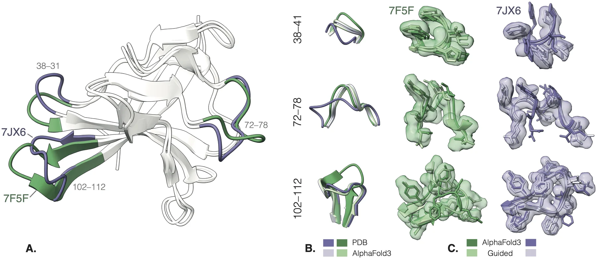
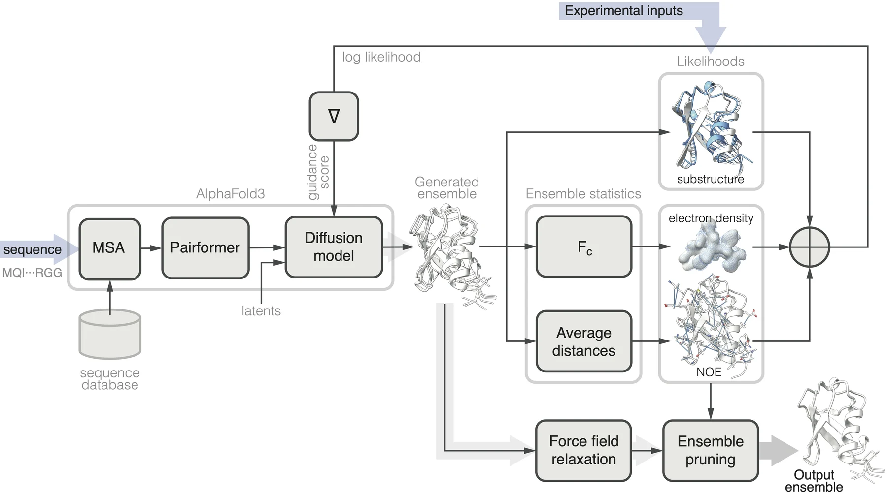
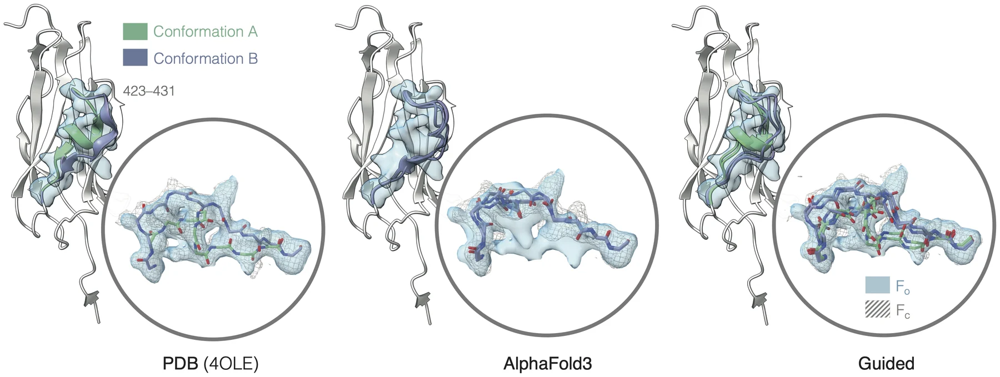
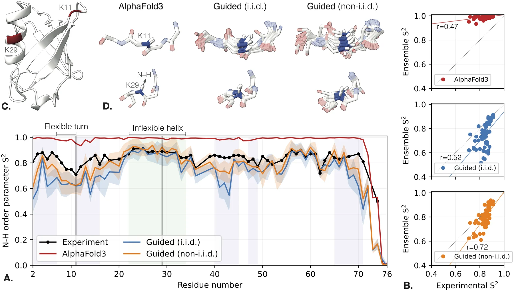

In short
AlphaFold3 is a diffusion model that predicts a protein's 3D structure from its sequence, and it tends to output a single dominant mode. But proteins move, and experimental measurements are noisy averages over many molecules in many shapes. This makes it an inverse problem, with the frozen AlphaFold3 as the prior and differentiable forward models of the measurements as the likelihood, sampled with guidance. The guided predictions fit the data better than AlphaFold3 alone, sometimes better than the structures experts deposited, in minutes instead of hours.
What’s new. Treating the ensemble, not the single structure, as the unit of inference. Experiments measure averages, so the members are guided jointly. This lets the ensemble split across conformations and capture rare ones. A single structure, or structures guided one by one, cannot do this.
One input, a distribution of outputs
AlphaFold3 is used as a point predictor, with one sequence in and one structure out. But the right output is a distribution. Parts of a protein switch between shapes, and these motions often define its function.
Experiments do see this distribution, but only through averages. An X-ray density map averages over trillions of copies in a crystal, and nuclear magnetic resonance (NMR) measurements average over molecules and over time. AlphaFold was trained mostly on single structures fitted to that data, so it learned to predict the mode. It is very good at the mode, and that is exactly why it misses the rest of the distribution.

AlphaFold as a prior, the experiment as a likelihood
The framing is the classic one from inverse problems. We want structures X that are plausible for this sequence and explain the measurement y:
p(ensemble | data) ∝ p(data | ensemble) × p(ensemble | sequence)
AlphaFold3 is a diffusion model, so it gives us the prior term for free, in the form of a score we can follow. For the likelihood we wrote differentiable "forward models", little simulators of what each experiment would see for a given structure. For crystallography that is an electron density map, and for NMR it is nuclear Overhauser effect (NOE) restraints, which say that two hydrogen atoms are close on average. During sampling, the gradient of the likelihood is added to AlphaFold's own update, nudging the structures toward the data at every denoising step.

Guide the ensemble, not each structure
This is the main idea of the paper. The prior is separable, since every structure in the ensemble is its own AlphaFold sample. The likelihood is not separable, because the experiment only sees the average. So guiding each of a hundred structures to fit the data on its own does not work.
With that approach (we call it i.i.d. guidance), every structure is trying to explain the whole measurement by itself. When the data comes from a mix of two conformations, no single structure can do that, so they all compromise in the same way. If instead the ensemble is guided jointly, each member feels how the group is doing. If conformation B is already over-represented, the gradient pushes some members toward A. This is much easier to see than to read.
Fitting a two-state measurement with an ensemble
A 1D cartoon, not the real model. The prior is a two-bump mixture, the "density" of each member is a Gaussian blob, and sampling is annealed Langevin dynamics with guidance. The same guidance strength is used in both guided modes. The only difference is whether the likelihood is computed per member or on the average.
A loop can sit in conformation A or B, and the crystal has both, so the measured density (green) has two bumps. The prior strongly prefers B (dotted line). Each dot is one ensemble member, and the orange line is the density the ensemble produces. Switch modes and watch the sampler run.
Without guidance, nearly everyone sits in B, because that's what the prior believes. With i.i.d. guidance, each member tries to cover both bumps on its own. The best a single blob can do is sit between them, in a conformation that isn't actually there. Pulled there by the guidance and toward B by the prior, most members stay in B, and at most a few end up in the middle. Joint guidance is the only one that splits the ensemble and reproduces both bumps.
What it finds in real crystals
This isn't only a toy effect. The Protein Data Bank (PDB) is full of "altlocs", regions where crystallographers modeled two alternative conformations because the density clearly showed both. Many visualization tools just show the first one by default. In the human NBR1 protein (PDB 4OLE), a segment of nine amino acids is either a helix or a strand. AlphaFold3 predicts only one of them. Density-guided AlphaFold3 recovers both.

Across a benchmark of altloc cases, the guided ensembles consistently fit the density better than unguided AlphaFold3, and they were consistently bimodal where unguided AlphaFold3 typically gave a single mode. On 15 more proteins, with regions of up to 22 amino acids optimized, the guided structures matched or beat the deposited PDB models on density agreement in every case.
NMR, from hours to minutes
NMR is where the ensemble view really matters. An NOE indicates that two hydrogens are close on average. The standard workflow fits structures with restrained molecular dynamics (MD), and fitting conformers one at a time tends to give rigid ensembles that don't reflect the real motion. Doing it properly with ensemble MD takes days even for small proteins.
The strongest test is ubiquitin, the classic benchmark for protein dynamics. There's an independent experiment, spin relaxation, that measures how much each backbone N–H bond wiggles (the order parameter S²). This data is not used for guidance, which makes it a fair check of whether the ensemble moves like the real protein.

Guidance takes a few minutes per protein instead of many hours. In the follow-up we ran it on 91 NMR systems, where the guided ensembles satisfied the restraints better than the deposited NMR structures in 77% of cases.
Guidance is a strong pull, and with large ensembles the structures start overfitting to the noise in the data, giving broken bonds and atoms that run into each other. That's why the pipeline ends with a force-field relaxation and a pruning step. It works well, but it's a patch, not a principled fix.
Most importantly, an ensemble that explains the data isn't necessarily the ensemble. Different sets of structures can explain the same averages equally well. These are hypotheses consistent with the measurements, not thermodynamic populations.
Cite
@inproceedings{maddipatla2025inverse,
title = {Inverse Problems with Experiment-Guided AlphaFold},
author = {Maddipatla, Sai Advaith and Bojan Sellam, Nadav and Bojan, Meital and
Vedula, Sanketh and Schanda, Paul and Marx, Ailie and Bronstein, Alexander},
booktitle = {Proceedings of the 42nd International Conference on Machine Learning},
series = {PMLR}, volume = {267}, pages = {42366--42393},
year = {2025}
}